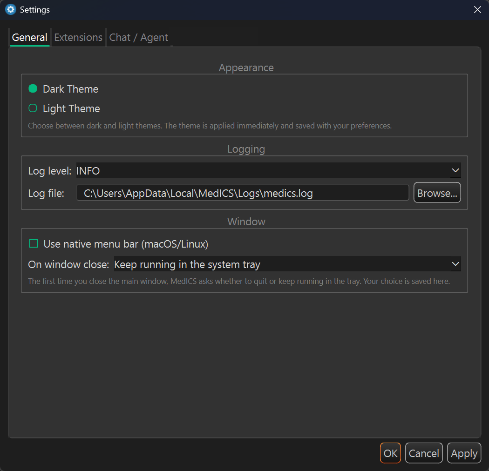
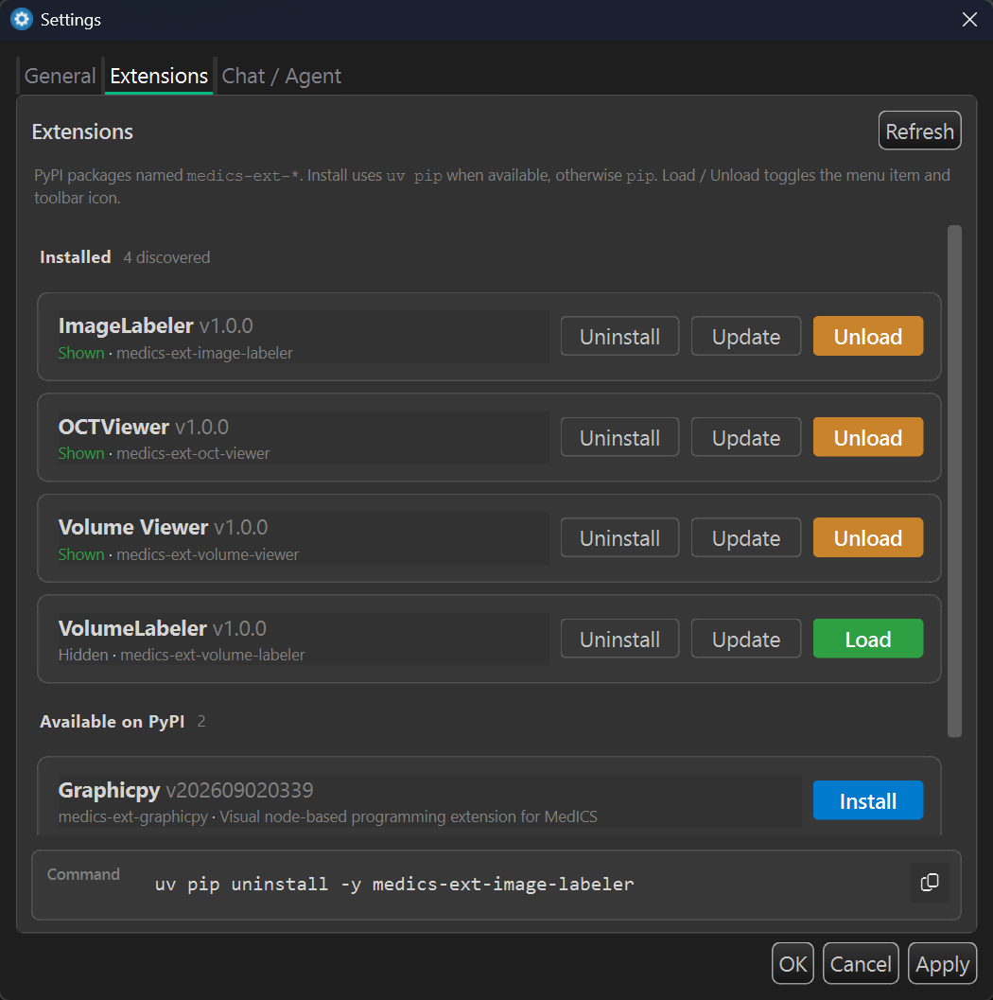

Settings & preferences
Open preferences from Edit → Preferences. Every group lives in one dialog, so you can move between appearance, logging, chat and workspace options without leaving it.

| Group | What you can set |
|---|---|
| Appearance | Dark or light theme |
| Window | Window size and starting geometry |
| Logging | Log level and log file location |
| Chat | AI provider, model, API keys, temperature and maximum tokens |
| Workspace | Auto-save for the workspace |
| Extensions | Whether extensions load automatically at startup |
Extension manager
Extensions you install are managed from Extensions → Extension Manager. Browse what is
installed, turn each one on or off, and reload an extension after an update without restarting
MedICS. New packages are installed with pip — see
Extensions.

Changes are saved and applied the next time the relevant part of the application starts.